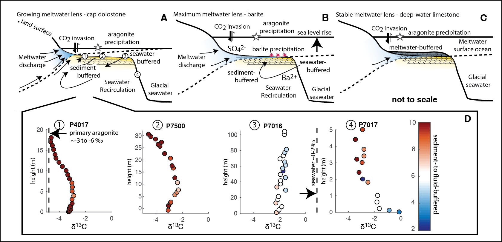
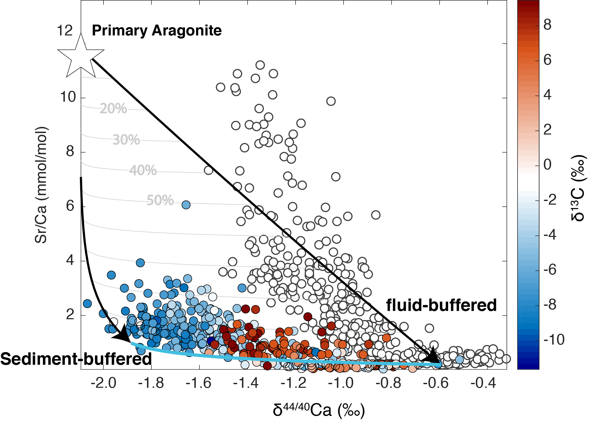

I am particularly interested in the co-evolution of climate and life during fundamental transitional periods in Earth history such as the Neoproterozoic Snowball Earth events, the Cambrian explosion of animal life, and the end-Ordovician mass extinction.
Diagenetic reactions involve fluids from either rain (meteoric water), seawater,
or deep crustal brines, that flow through the sediment. The amount of fluid flow
determines the extent to which diagenesis alters or preserves the original geochemical
signals (fluid- and sediment-buffered diagenesis). I have developed a numerical
model that simulates these reactions between sediments and pore-fluids along
the fluid flow path. The model has been ground-truthed against measurements of
calcium and magnesium isotopes from modern to Neogene carbonate sediments in
the Bahamas. By quantifying the style and extent of early marine diagenesis
(fluid- versus sediment-buffered), this model can explain much of the stratigraphic
and lateral variability observed in the chemistry of Neogene shallow-water
carbonate sediments and extract the chemical composition of contemporaneous
seawater.
635 million years ago, the surface of our planet went through dramatic changes during the aftermath of the last great Snowball Earth. This period is marked by conspicuous dolostone units that cap glacial deposits worldwide - the basal Ediacaran cap dolostones. By measuring calcium and magnesium isotope ratios in cap dolostone units from across the world, we have identified spatial patterns of fluid flow that record the circulation of glacial seawater beneath the seafloor during Snowball Earth deglaciation. This research has revealed that the geochemical variability recorded in cap dolostones largely is the product of local diagenetic processes expressed globally in continental margins. 
The descent into the last great Snowball Earth glaciation is recorded by an extreme negative carbon isotope excursion - The Trezona anomaly. This pre-glacial excursion is found globally in carbonate rocks and reaches enigmatic carbon isotope values of -10 per mill. Through measurements of calcium and magnesium isotopes, I am currently exploring the relative timing and potential drivers for this excursion. 
The concentration of reactive Fe in sedimentary rocks is extremely sensitive to
modern weathering processes. Understanding the record of redox sensitive
elements in ancient sediments is fundamental for extracting records of the
concentration of atmospheric oxygen through Earth history. By using trace
element analysis of samples from a shallow self-drilled core and coincident
outcrop from Vinini Creek (Central Nevada), I found that in core samples there
is abundant iron bound to pyrite and siderite minerals. In contrast, in outcrop
samples much of that iron had been remobilized and transformed into iron oxides.
This work emphasizes the limitations for using measurements of the concentration
of pyrite and iron oxide in rocks collected from outcrop to infer past changes
in oxygen levels (the iron speciation proxy) and highlights the need for more
robust methods to evaluate the degree of alteration and diagenesis in ancient
sediments.